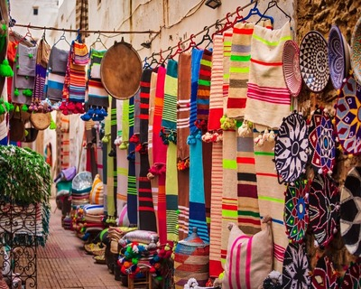
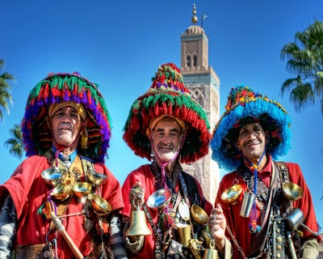
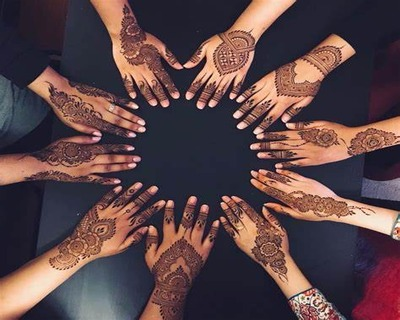

Morocco is a country rich in culture and tradition, shaped by centuries of Berber, Arab, African, and European influences. From its vibrant souks filled with colorful spices and handcrafted goods to its intricate architecture adorned with detailed mosaics and carvings, Morocco offers a sensory experience unlike any other. The country's legendary hospitality is evident in everyday life—guests are welcomed with mint tea, offered with warmth and ceremony, reflecting deep-rooted values of generosity and respect. Traditional customs such as the serving of mint tea, the use of henna during weddings and religious celebrations, and the wearing of the djellaba or kaftan during special events highlight the importance of family, spiritual practice, and social connection. Cultural expressions vary widely from region to region, with each area showcasing its own language dialects, musical styles—from Gnawa and Andalusian to Berber folk—and distinctive crafts such as pottery, weaving, and metalwork. Whether in a bustling city or a quiet mountain village, Morocco’s diverse and colorful mosaic of heritage continues to thrive, blending the old with the new in a truly captivating way.

Often called "Moroccan whiskey" (without alcohol), mint tea is more than a drink—it's a cultural gesture of hospitality and respect. Traditionally prepared with green tea, fresh mint, and plenty of sugar, it's served in small glasses and poured from a height to create foam, which is seen as a mark of good preparation. The ceremony is a daily social ritual in homes, cafes, and during gatherings, symbolizing warmth, generosity, and connection.
Henna is an ancient body art used in Morocco to celebrate joyous occasions, especially weddings. During a henna night (usually before a wedding), the bride and sometimes guests have intricate designs painted on their hands and feet using a natural dye made from henna leaves. These patterns are believed to bring luck, happiness, and protection from evil. Henna is also popular during religious festivals like Eid and other family milestones.
These are the two most significant Islamic holidays in Morocco. Eid al-Fitr, marking the end of Ramadan, is celebrated with early morning prayers, sweet treats, and visiting family. Eid al-Adha, the "Festival of Sacrifice," honors the willingness of Ibrahim (Abraham) to sacrifice his son for God. Families gather to perform the ritual animal sacrifice, distribute meat to the poor, and enjoy special meals together. Both holidays highlight values of faith, charity, and community.
Morocco's musical landscape is as diverse as its geography, from the spiritual Gnawa rhythms of the south to the Andalusian orchestras of the north. Traditional instruments like the oud, rebab, and darbouka create distinctive sounds that tell stories of history and culture. The annual Fes Festival of World Sacred Music celebrates this rich musical heritage, bringing together performers from across the globe in a celebration of spiritual expression through sound.
Moroccan cuisine is world-renowned for its complex flavors and unique cooking techniques. The tagine, both a cooking vessel and the slow-cooked stew prepared in it, is a centerpiece of Moroccan dining. Other staples include couscous (traditionally served on Fridays), pastilla (savory-sweet meat pie), and a vast array of spices like saffron, cumin, and ras el hanout. Meals are often communal affairs, with family members sharing from a central dish using bread instead of utensils.
Moroccan handicrafts represent centuries of artisanal knowledge passed through generations. From the intricate zellige tilework of Fes to the vibrant carpets of the Middle Atlas mountains, each region has its specialty. Leather tanning in Marrakech, pottery in Safi, and metalwork in Tetouan all follow traditional methods that have changed little over time. These crafts not only create beautiful objects but also preserve cultural heritage and provide livelihoods for many communities.